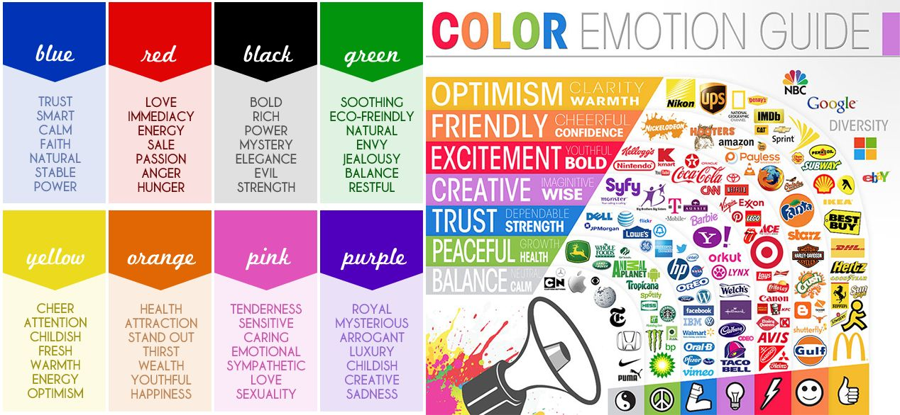
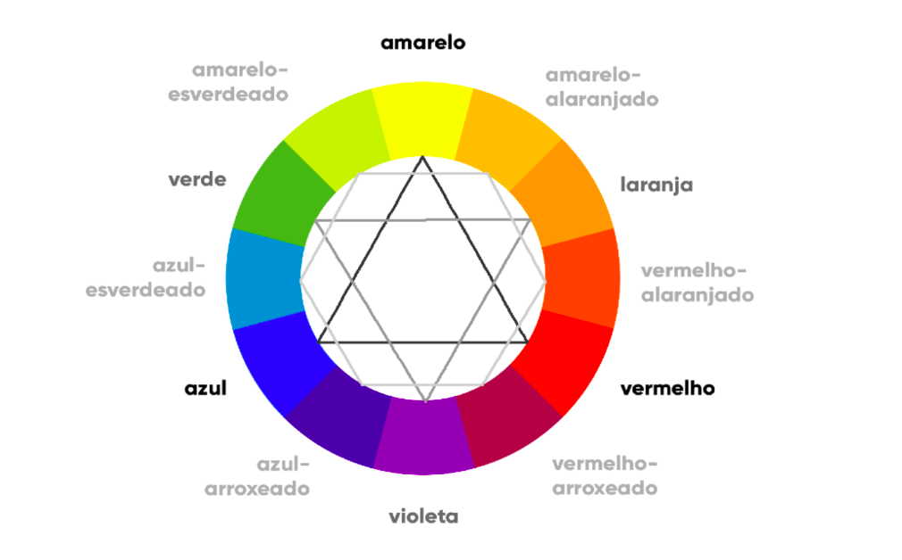

A sincronia é uma poderosa arma do design para conseguir uma comodiade visual. Confira na imagem abaixo alguns conceitos interessantes sobre cores:
Podemos perceber o por quê de algumas das maiores empresas do mundo utilizarem determinadas cores em suas logomarcas.
Veja na imagem abaixo o círculo cromático:
No circulo cromático acima, as cores PRIMÁRIAS são o AMARELO, VERMELHO e AZUL. Elas estão simétricas, formando um triângulo equilátero.
As cores SECUNDÁRIAS são o LARANJA, VIOLETA e VERDE. Também formam o triângulo equilátero, porém, invertido.
As cores TERCIÁRIAS são todas as outras, que são misturas das cores PRIMÁRIAS e SECUNDÁRIAS. Eles estão sempre entre as PRIMÁRIAS e SECUNDÁRIAS.
As cores TERCIÁRIAS são: AMARELO-ESVERDEADO, AMARELO-ALARANJADO, VERMELHO-ALARANJADO, VERMELHO ARROXEADO, AZUL-ARROXEADO, AZUL-ESVERDEADO.
A Paleta de Cores sempre parte de uma cor principal. Geralmente uma paleta de cores vai ter de 3 a 5 cores no máximo, desconsiderando branco e preto, porque branco e preto sempre vai estar no site. Se o desenvolvedor está trabalhando com um cliente e, a logomarca deste cliente é muito importante, é preciso identificar qual a cor primária da logomarca. No site desse cliente será utilizada a cor primária desta logomarca.
As cores complementares são aquelas que tem mais contraste entre si. Para identificar as cores de maior contraste entre si, basta traçar uma linha reta no círculo cromático.
Ao contrário das cores complementares, as cores análogas são aquelas que não tem contraste tão grande entre elas, mas elas são perceptíveis. As cores análogas são as vizinhas, subsequentes, dentro do círculo cromático.
Selecione duas cores vizinhas. A partir dali ele vai pular uma cor e escolher a terceira.
Três cores intercaladas. Um pouco mais "dura", mas é também uma opção.
Seria mais ou menos assim:

Outros links importantes são:
Rockcontent
Matilde Filmes
Neil Patel
Para acessar a aula anterior, clique aqui.
Para acessar a próxima aula, clique aqui.
Para acessar o material em PDF desta aula clique aqui.